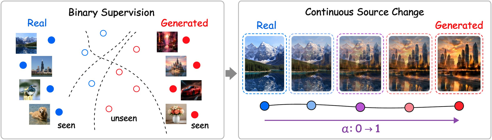
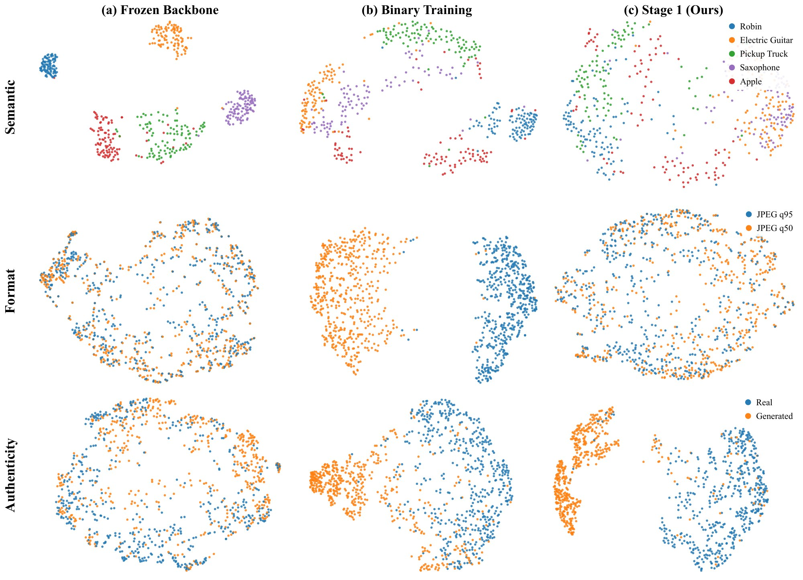
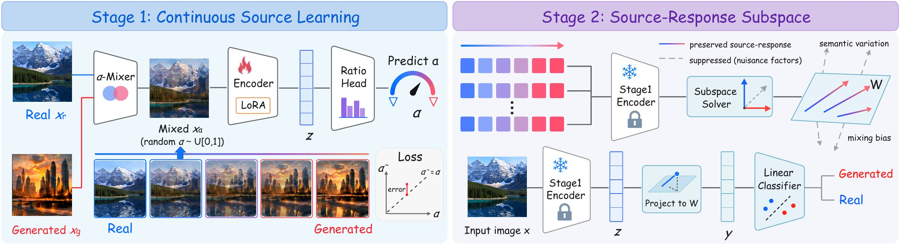
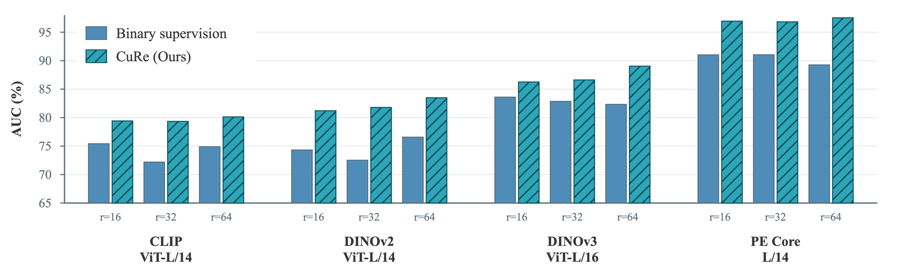
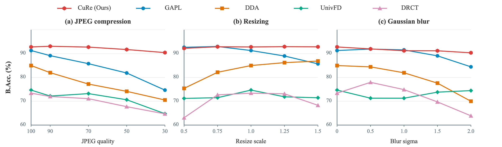

- 89.7%average balanced accuracy over ten public benchmarks, 5.2 points above the second-best method (DDA, 84.5%)
- 93.8%balanced accuracy on the in-the-wild Chameleon benchmark, 10.9 points above the second-best method
- 12/ 12backbone and LoRA-rank settings in which ratio supervision beats binary supervision, with AUC gains of 2.7 to 9.3 points
Abstract
Advances in image generation have made synthetic images increasingly difficult to distinguish from real photographs, raising concerns about the trustworthiness of visual media. Existing AI-generated image detectors often perform well on in-domain data, but their robustness and cross-generator generalization remain limited. These limitations are commonly attributed to overfitting to shortcut cues. Although many methods seek to suppress shortcut learning, most retain binary classification as the training task without reconsidering how the task itself shapes the learned representations. We introduce CuRe, a framework for learning Continuous Source Responses that revisits authenticity detection from the perspective of the training task. CuRe reformulates backbone adaptation as regression of real–generated mixing ratios, providing finer supervision that encourages the model to capture authenticity-related variation beyond binary endpoint separation. We further select a compact source-response subspace to suppress nuisance variation and limit the final classifier's access to potential shortcut cues. Across ten public benchmarks, CuRe achieves an average balanced accuracy of 89.7%, exceeding the second-best method by 5.2%. Further experiments demonstrate consistent generalization gains across visual backbones and strong robustness to common image degradations. Code is available at https://github.com/manic-cui/CuRe.
Contributions
- We offer a perspective on the robustness and generalization challenges in AIGI detection by examining how the training task shapes the learned representations.
- We propose CuRe, which shifts backbone adaptation from binary classification to continuous regression of the mixing ratio, encouraging the model to capture subtle changes along continuous transitions between real and generated images.
- Comprehensive experiments demonstrate CuRe's strong generalization on diverse benchmarks and robustness to common post-processing, with consistent gains over binary training across multiple visual backbones.
Why does binary supervision invite shortcuts?
Endpoint labels leave the backbone free to separate the training classes by semantics, format or generator artifacts.
Most current AIGI detectors build on pretrained visual backbones such as CLIP and DINOv3. However, these backbones are not designed for source authentication, and their representations tend to emphasize semantic content over authenticity cues. Binary fine-tuning provides only coarse endpoint supervision for adapting these representations, allowing the model to exploit semantic biases, format differences, or generator-specific artifacts that separate the training classes, which can impair robustness and cross-generator generalization.
Figure 2 shows that, after binary fine-tuning, the backbone remains highly sensitive to semantic content and exhibits stronger separation between JPEG quality levels. Such semantic and format biases may encourage the model to rely on shortcuts rather than differences between real and generated images for classification. Prior work mitigates these limitations through forensic-aware architectures, bias-controlled training data, and representation regularization. These approaches improve generalization, but most retain binary supervision for representation learning, and some rely on strong hand-crafted priors about which forensic cues to emphasize or which nuisance factors to suppress.

Instead, we revisit this problem from the perspective of the training task. Coarse binary supervision provides limited guidance for adapting semantically oriented pretrained features to source authentication, leaving room for decisions based on shortcuts. We therefore introduce CuRe, which constructs continuous transitions between real and generated images through interpolation in pixel space and trains the backbone to predict the mixing ratio. This continuous regression task shifts backbone adaptation from learning a binary decision boundary to modeling continuous source responses. We then freeze the adapted backbone and extract a compact subspace, motivated by the hypothesis that transferable source responses can be captured in relatively few feature directions. By suppressing nuisance variation and restricting the final classifier to this subspace, we limit its access to potential shortcut cues.
Method
Stage 1 learns to regress how much of an image is generated; Stage 2 keeps only the directions that respond to that change.
As illustrated in Figure 3, CuRe consists of two training stages. Stage 1 adapts the encoder using our training objective to improve the model's ability to perceive authenticity-related cues. Subsequently, Stage 2 freezes the encoder from Stage 1 and constructs a useful subspace for classification.

Stage 1 · Continuous source-sensitive representation learning
Binary supervision distinguishes real and generated endpoints, but does not explicitly constrain how predictions should vary between them. To provide finer guidance for backbone adaptation, we reformulate the learning task as predicting the mixing ratio of real and generated images. We construct the training input by interpolating a real image xr and a generated image xg:
where each training pair receives one independently sampled mixing ratio as the prediction target. Varying this ratio defines a controlled path between the two source endpoints, allowing us to train the representation's response to graded source changes. This interpolation is not intended to reproduce the image generation process.
We sample real and generated endpoints independently at random, so learning covers diverse content combinations without requiring semantic matching. However, changes along these paths also include content variation, which we address as interference in Stage 2.
We use the vision tower of Perception Encoder Core L/14 (PE Core L/14) for its strong transferable visual features. We keep its pretrained parameters frozen and adapt the encoder with LoRA in this stage. Let fθ denote the encoder equipped with the learned LoRA updates. The feature of a mixed image is passed to a lightweight regression head gφ with a sigmoid output to predict the mixing ratio:
For N sampled pairs with independently drawn ratios αi, the training objective is
where ℓreg is binary cross-entropy with the mixing ratio αi as a soft target. Predicting these continuous targets requires the model to distinguish intermediate mixtures and estimate the degree of mixing. This supervision therefore encourages the encoder to resolve graded source changes, providing finer guidance for backbone adaptation than endpoint labels alone. We jointly train the LoRA parameters and ratio head, then discard gφ and freeze the adapted encoder fθ for subsequent subspace extraction.
Stage 2 · Interference-suppressed source-response subspace
Stage 1 makes the representation sensitive to source changes, but the full feature space still contains content and mixing-related variation. We hypothesize that transferable source responses can be captured in a low-dimensional subspace. Based on this hypothesis, Stage 2 keeps the adapted encoder fixed and selects directions with strong source responses relative to nuisance variation. The final classifier then operates within this subspace. To estimate source and nuisance responses, we construct three controlled trajectory types T ∈ {RF, RR, FF}: real–generated, real–real, and generated–generated. For endpoints xT,0i and xT,1i, we define
Here, all trajectories use the fixed grid 𝒜 = {0, 0.2, 0.4, 0.6, 0.8, 1.0} for subspace estimation. RF changes both source and content, whereas RR and FF mix images while keeping the source class fixed. The latter therefore provide controls for responses that do not require a real–generated transition. To compare these responses, we summarize each trajectory by its regression slope over α, which captures the direction and magnitude of feature change:
where ᾱ and z̄Ti are the trajectory means. We then form three compact statistics:
CF measures RF responses, including source and nuisance effects, while CM estimates same-source mixing responses. Because all RF trajectories use the same ratio grid, they have the same mean mixing ratio. We therefore use the covariance CS of their mean features as a proxy for content variation across image pairs. We normalize each statistic by its trace, then select directions with strong RF responses relative to same-source mixing and cross-pair content variation:
where λs and λm control interference suppression and εI ensures numerical stability. The eigenvectors associated with the k largest generalized eigenvalues form
We retain k = 128 directions in the 1,024-dimensional feature space by default. Unlike PCA, we select directions by source response relative to interference, rather than total variance.
Stage 3 · Subspace-constrained source classification
Given an input image x, the frozen adapted backbone extracts a D-dimensional feature z. We center and project it into the k-dimensional source-response subspace, then apply a single linear layer to predict class probabilities via softmax:
Here, μ is the mean RF trajectory feature estimated during subspace construction, and A and c denote the classifier weights and bias. During training, the encoder, including its Stage-1 LoRA parameters, and (μ, W) remain frozen. We optimize only A and c using cross-entropy:
where yi = 0 denotes a real image and yi = 1 a generated image. The classifier's decision direction in the original feature space is restricted to span(W), limiting its access to potential shortcut cues in discarded feature directions.
Experiments
Setup
Training configuration. We train CuRe exclusively on the Stable Diffusion v1.4 training subset of GenImage, which contains generated images and real images from the ImageNet classes. To remove format shortcuts, we re-encode the generated images as JPEG to match the real images, following the setting of DDA. We use the same training data and format alignment configuration for CuRe and all retrained comparison methods.
Evaluation benchmarks. We evaluate on ten public benchmarks: AIGCDetectBenchmark, AIGIBench, UnivFakeDetect, EvalGEN, SynthWildX, WildRF, BFree-Online, RRDataset, RealChain, and Chameleon. These benchmarks cover diverse generators, most of which are unseen during training. For AIGIBench, we select the 20 subsets corresponding to full-image synthesis.
Compared methods. We compare CuRe with NPR, UnivFD, FatFormer, C2P-CLIP, DRCT, SAFE, DDA, GAPL, and DGS-Net. We retrain NPR, UnivFD, FatFormer, and SAFE using the same paradigm as CuRe, while retaining their original architectures and recommended optimization settings. For the remaining methods, we use their officially released pretrained weights and recommended inference settings, as their specialized training datasets or multi-stage training pipelines are integral to their methods.
Implementation details. We use PE Core L/14 at 336×336 resolution. In Stage 1, we fine-tune the backbone using LoRA on the query and value projections of every attention layer, with rank r = 64 and scaling parameter α = 128. We optimize the LoRA parameters and ratio head for five epochs using AdamW with a learning rate of 1×10−5. In Stage 2, we estimate a subspace of dimension k = 128 from 20,000 sampled endpoint pairs. We then freeze the adapted encoder and subspace and train only the linear classifier for five epochs using AdamW with a learning rate of 2×10−4.
Overall cross-benchmark generalization
Trained on a single generator, CuRe leads the overall average by 5.2 points.
Table 1 compares CuRe with existing detectors on ten benchmarks, spanning both standard and in-the-wild evaluation settings. CuRe achieves the best Overall Avg. of 89.7%, outperforming DDA (84.5%) by 5.2%. On the challenging in-the-wild Chameleon benchmark and RealChain, which combines multiple image degradations, CuRe achieves 93.8% and 79.7% B.Acc., outperforming the second-best method by 10.9% and 11.8% respectively. These results indicate strong generalization to unseen generators and robustness to image degradations encountered in real-world scenarios.
Axis starts at 40. Hover a dot for its value; exact numbers are in Table 1.
Table 1. Overall comparison across AIGI detection benchmarks. All entries are in % and all accuracy values are balanced accuracy. Each benchmark score is the unweighted macro-average over its evaluated subsets when applicable. Best and second-best average results are marked in bold and underlined, respectively.
| Standard benchmarks | In-the-wild benchmarks | ||||||||||
|---|---|---|---|---|---|---|---|---|---|---|---|
| Method | AIGCDetect | AIGIBench | UnivFD | EvalGEN | SynthWildX | WildRF | BFree-On. | RRDataset | RealChain | Chameleon | Overall Avg. |
| NPRCVPR'24 | 63.5 | 63.9 | 53.5 | 86.3 | 47.4 | 51.9 | 46.7 | 49.3 | 50.7 | 54.9 | 56.8 |
| UnivFDCVPR'23 | 67.4 | 74.7 | 50.8 | 94.5 | 61.6 | 57.3 | 64.9 | 61.2 | 66.1 | 62.1 | 66.1 |
| FatFormerCVPR'24 | 61.3 | 63.4 | 52.6 | 65.1 | 52.6 | 57.7 | 60.7 | 50.3 | 50.0 | 50.6 | 56.4 |
| C2P-CLIPAAAI'25 | 78.4 | 69.6 | 91.6 | 66.4 | 55.3 | 59.5 | 50.0 | 52.7 | 50.2 | 50.7 | 62.4 |
| DRCTICML'24 | 68.3 | 73.4 | 56.7 | 75.4 | 74.6 | 73.8 | 73.8 | 60.5 | 64.9 | 68.5 | 69.0 |
| SAFEKDD'25 | 73.0 | 60.2 | 53.0 | 92.8 | 56.0 | 58.5 | 60.8 | 59.3 | 63.4 | 46.7 | 62.4 |
| DDANeurIPS'25 | 86.1 | 85.0 | 77.4 | 97.9 | 90.7 | 90.5 | 94.5 | 71.6 | 67.9 | 82.9 | 84.5 |
| GAPLCVPR'26 | 96.2 | 91.3 | 95.2 | 97.5 | 86.4 | 85.6 | 67.3 | 75.1 | 62.8 | 69.1 | 82.6 |
| DGS-NetICML'26 | 77.2 | 60.1 | 78.6 | 53.0 | 50.3 | 53.6 | 50.2 | 50.0 | 50.0 | 50.2 | 57.3 |
| CuRe (Ours) | 89.3 | 92.8 | 82.0 | 98.1 | 92.7 | 95.8 | 90.9 | 81.5 | 79.7 | 93.8 | 89.7 |
Generalization across backbones and LoRA ranks
Ratio supervision beats binary supervision in all twelve backbone and rank settings.
We test whether continuous source learning depends on a particular pretrained representation. We consider CLIP ViT-L/14, DINOv2 ViT-L/14, DINOv3 ViT-L/16, and PE Core L/14. For each backbone, we compare a conventional binary-supervised baseline with CuRe. We vary the LoRA rank over r ∈ {16, 32, 64}. At each rank, the two methods use identical target modules, and we set α = 2r to keep the LoRA scaling α/r fixed. All variants use the same training data, preprocessing and model-selection protocol.

Figure 4 provides a controlled test of both backbone generality and adaptation capacity. Ratio supervision outperforms the binary objective in all twelve settings, with AUC gains ranging from 2.7% to 9.3%. The improvement remains consistent across CLIP, DINOv2, DINOv3, and PE Core. These results demonstrate consistent generalization gains across visual backbones and LoRA ranks, supporting CuRe's effectiveness across model and adaptation configurations.
Moreover, continuous-ratio supervision benefits more reliably from increasing LoRA rank. Despite minor fluctuations, it achieves its strongest AUC at r = 64 across all four backbones, whereas binary supervision often saturates or degrades as the rank increases. This trend suggests that CuRe more effectively guides and constrains representation learning, enabling more consistent gains as the LoRA rank increases and allowing the backbone to realize greater representational potential.
Ablation study
Both stages matter: ratio learning lifts B.Acc. by 9.6 points, and the subspace adds 2.8 more.
Effect of Stage-1 learning
Table 4 compares three detectors under a matched LoRA protocol. The classification baseline jointly trains LoRA and a binary head. Stage-1 Prediction (Direct) instead uses the continuous Stage-1 prediction α directly as the generated-image score, with the fixed threshold 0.5 for computing B.Acc. All variants use identical LoRA target modules, rank, optimizer, and training schedule.
The binary LoRA baseline achieves only 80.2% balanced accuracy and 89.2% ROC-AUC. Directly using the Stage-1 prediction improves these results to 89.8% and 97.2%, confirming that continuous source learning captures useful source information. Nevertheless, it remains 2.8% below the full CuRe in balanced accuracy, while the ROC-AUC gap is 0.3%. This suggests that the Stage-1 score already provides a meaningful ranking of real and generated images, but its raw prediction scale and fixed decision threshold are not yet optimal for classification.
Effect of the source-response subspace
Table 5 studies Stage 2 using the same fixed LoRA-adapted Stage-1 checkpoint within each seed. PCA-128 is a low-dimensional control, Full Feature bypasses subspace projection, and CM + CS retains the interference directions. The CF (CuRe) row denotes the proposed source-response subspace obtained by maximizing CF relative to CM + CS. All variants use the same linear-classifier protocol.
Retaining only the CM + CS directions gives the weakest performance, with 83.2% balanced accuracy and 85.8% ROC-AUC. The weak performance of this interference subspace indicates that directions dominated by ordinary mixing and content-related variation are insufficient for reliable source authentication. Training a classifier directly on the full feature reaches 89.7% balanced accuracy and 90.5% ROC-AUC, but remains 2.9% and 7.0% below CuRe, respectively. PCA-128 reaches 89.8% balanced accuracy and 91.1% ROC-AUC, performing similarly to Full Feature but remaining 2.8% and 6.4% below CuRe. CuRe achieves larger improvements by retaining directions sensitive to real–generated changes while suppressing nuisance variation.
Robustness to common post-processing
CuRe degrades only slightly under JPEG compression, resizing and blur.
We evaluate the robustness of CuRe and four strong competing methods selected from Table 1 on AIGIBench. We vary JPEG quality, bicubic resize scale, or Gaussian blur one at a time before method-specific preprocessing. Figure 5 shows that CuRe incurs only minor performance degradation across all tested perturbation types and severities. It achieves the best performance in most settings and demonstrates stronger overall robustness than all competing methods.

Conclusion
We introduced CuRe for generalizable AI-generated image detection by reconsidering the supervision used to adapt pretrained visual backbones. Rather than treating authenticity only as a binary endpoint decision, CuRe learns from continuous real-to-generated transitions, providing denser guidance that makes the representation more sensitive to source variation. The adapted backbone is then frozen, and a compact source-response subspace is extracted to preserve stable authenticity-related variation while suppressing semantic and other source-irrelevant factors. Restricting the final classifier to this subspace limits its access to nuisance directions in the full representation.
Across ten public benchmarks, CuRe shows strong generalization to unseen generators and different real-image domains, together with robust performance under common post-processing. Cross-backbone experiments consistently favor continuous supervision over binary classification, and controlled ablations verify the complementary contributions of continuous source learning and source-response subspace selection. These results demonstrate that enriching the supervision of source variation and constraining the classifier to stable source-responsive directions provide an effective basis for generalizable AIGI detection.
Limitations and future work
CuRe constructs continuous supervision through linear pixel-space interpolation between independently sampled real and generated images. These intermediate samples provide a controlled source-change path rather than a faithful approximation of the image-generation process, and some may deviate from the natural image manifold. Although the same-source controls in the second stage reduce the influence of ordinary mixing effects, future work could explore more realistic source transitions derived from latent interpolation, generation trajectories, or editing operations.
The present study primarily focuses on image-level detection of fully generated images. It does not explicitly localize partially generated regions or assess images containing mixtures of real and generated content. Extending continuous source-response learning to spatial representations may support partial-edit localization and more fine-grained authenticity assessment.
Code
The repository ships an inference script and the trained CuRe adapter (about 25 MB), which holds the Stage-1 LoRA updates, the Stage-2 subspace and the linear head. The frozen PE Core L/14 backbone is downloaded from Hugging Face on first use.
git clone https://github.com/manic-cui/CuRe.git
cd CuRe
pip install -r requirements.txt
python infer.py --input image.jpg
python infer.py --input images --recursive --batch-size 8BibTeX
@article{cui2026cure,
title = {Learning Continuous Source Responses for Generalizable {AI}-Generated Image Detection},
author = {Cui, Manni and Liu, Ruiqi and Yu, Zijian and Tan, Hao and Wei, Zibo and Wang, Zian and Qin, Ziheng and Zhu, Huijia and Wang, Weiqiang and Lan, Jun and Wu, Shu},
journal = {arXiv preprint arXiv:2609.14316},
year = {2026}
}